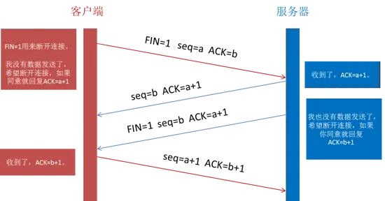
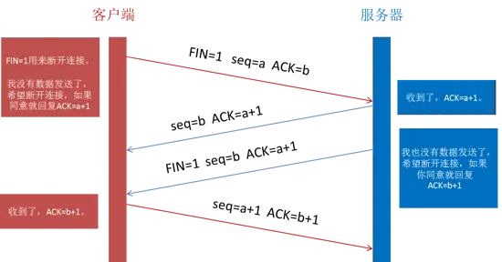

tcp三次握手和四次挥手
三次握手
标志位:数据包
SYN: Synchronize Sequence Numbers 同步序列编号
ACK: Acknowledgement 确认字符
状态:
listen:侦听TCP端口的连接请求 (我等着你发送连接请求呢)
SYN-SENT: 在发送连接请求后等待匹配的连接请求 (我发送了连接请求,我等你回复哈)
SYN-RECEIVED: 在收到和发送一个连接请求后等待对连接请求的确认 (我收到你的连接请求了,我等你回复我)
ESTABLISHED: 代表一个大开的连接,数据可以传送给用户 (建立连接了哈,我跟你说一下)


四次挥手
客户端：FIN：客户端进程发出连接释放报文，并且停止发送数据；
服务器：ACK：服务器收到连接释放报文，发出确认报文；
服务器：FIN+ACK：将最后的数据发送完毕后，就向客户端发送连接释放报文
客户端：ACK：收到服务器的连接释放报文后，发出确认报文（服务器只要收到了客户端发出的确认，立即进入CLOSED状态。同样，撤销TCB后，就结束了这次的TCP连接）
第一次挥手是浏览器发完数据后，发送FIN请求断开连接。
第二次挥手是服务器发送ACK表示同意，如果在这一次服务器也发送FIN请求断开连接似乎也没有不妥，但考虑到服务器可能还有数据要发送，所以服务器发送FIN应该放在第三次挥手中。
这样浏览器需要返回ACK表示同意，也就是第四次挥手。
 
